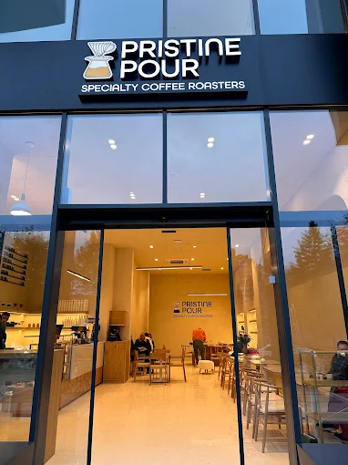
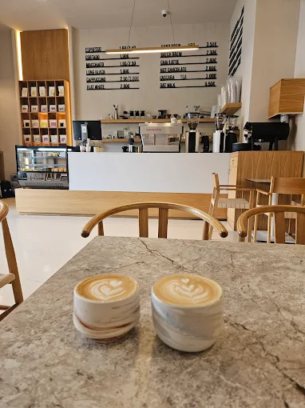
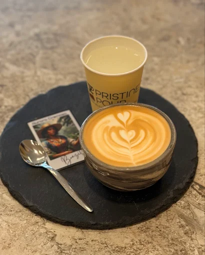

Prishtina Pour is a modern café in the heart of Prishtina,
created as a space where coffee culture meets comfort and
creativity. It is designed for people who want more than
just a drink — a place to study, work, or meet friends in
a warm and welcoming atmosphere. Every detail, from the
lighting to the seating, is built to make you feel at ease
while enjoying carefully crafted coffee and fresh flavors.
Inspired by the energy of the city,
Prishtina Pour blends a calm indoor environment
with a lively social spirit. Whether you’re starting
your day, taking a break, or staying late to focus,
it offers the perfect balance between productivity
and relaxation, making it a true everyday escape
within the city.